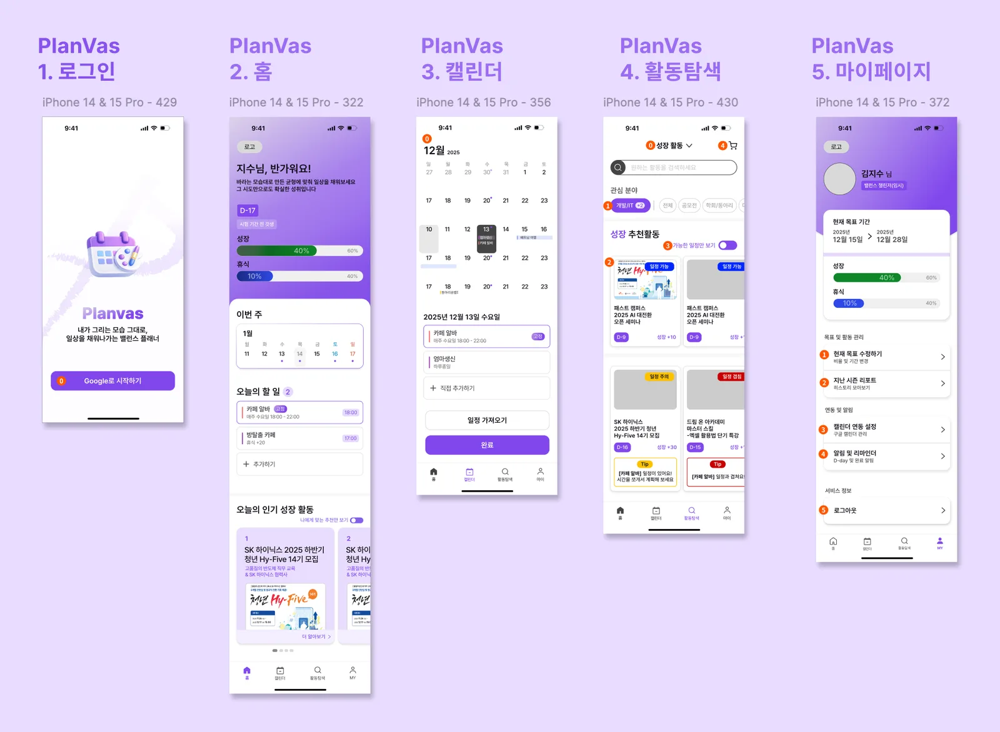
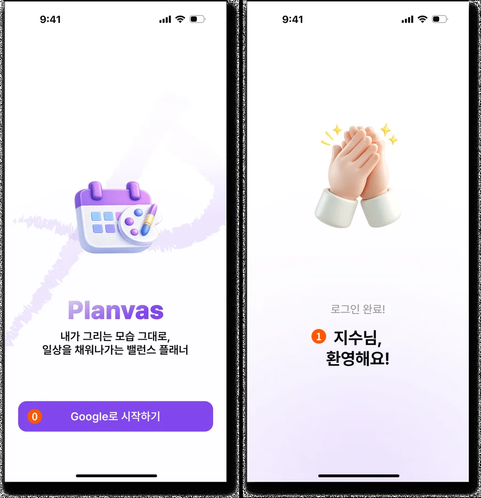

개요
- 성장·휴식 목표 비율을 정하고 캘린더와 연동해 일정을 관리하는 SwiftUI 앱
- 온보딩·마이페이지의 목표 설정 흐름, 서버 API 연동, 화면 간 내비게이션 구조 담당
화면


기술 스택
SwiftSwiftUICombineMoyaAlamofireKeychain.xcconfig
주요 기능 · 구현
목표 비율 설정과 API 연동
- 추천 버튼으로 성장·휴식 목표 비율 선택 → ViewModel 상태 갱신
- '완료' 시 날짜를 서버 규격 문자열로 변환
- 온보딩: 캘린더 연동 단계로 이동
- 마이페이지: 목표 생성 요청 전송, 성공 시 설정 화면 스택을 비우고 마이페이지로 복귀
환경 값으로 내비게이션 의존성 해결
NavigationRouter<T>와FlowContext를 SwiftUI 환경 값으로 주입- 같은 화면을 온보딩과 마이페이지에서 함께 사용
기술 선택 이유
Moya
- Alamofire만 쓰면 Base URL·메서드·헤더를 요청마다 작성해야 함
- 모든 API 요청을 enum으로 관리
Combine
- @State, @Binding만으로는 서버 데이터 반영·비동기 처리 시 데이터 흐름 추적이 어려움
- ViewModel에서 흐름을 한눈에 파악
Keychain · .xcconfig
- accessToken은 UserDefaults 대신 암호화 저장소인 Keychain에 보관
- BASE_URL, CLIENT_ID를 코드 대신 .xcconfig에 두고 Debug/Release별 서버 주소 분리, Info.plist가 깃에 올라가도 값이 안 보이게 함
트러블슈팅
재사용 화면에서 내비게이션 중첩 · 강제 종료
현상
- 화면마다 독립 내비게이션 스택을 두는 FlowView 구조
- 다른 흐름에서 화면을 재사용하면 NavigationStack 중첩, ViewModel·Router 미주입으로 런타임 크래시
원인
- 각 화면이 특정 라우터에 강하게 의존
- 온보딩·마이페이지처럼 다른 맥락에서 호출하면 필요한 의존성이 없음
해결
- 전체 구조 변경이 어려워 EnvironmentKey로
FlowContextKey생성 - 각 흐름의 시작 화면에서
.environment(\.flowContext, .myPage)처럼 현재 흐름 주입 - 하위 화면은 라우터 존재 여부 대신 이 값으로 이동 경로·API 호출 여부 결정
배운 점
- 화면이 특정 라우터 클래스에 직접 묶여 있으면 다른 흐름에서 재사용하기 어려움
- 다음엔 화면 이동을 Coordinator 같은 한 곳에서 관리할 생각